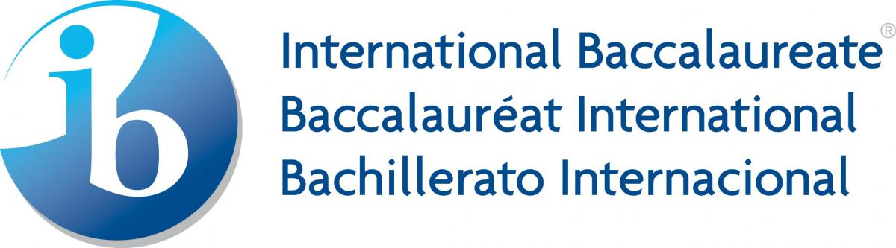

|

The Program At Hogsmeade International School
At Hogsmeade International School we respond to each child's individual learning needs. IB courses, culminating in the IB Diploma, offer your child a curricula that helps them develop essential learning skills while also playing to their own individual strengths.
Through our comprehensive, international programme, your child will:
- learn independence and self-discipline;
- study in an atmosphere of mutual respect;
- develop a deep appreciation of diverse opinions and cultures.
Building towards the IB Diploma, your child will follow the most internationally respected, learning-focused curricula in the world.
IB courses are recognised by the finest colleges and universities in the world. In the United States alone IB students are 21.4% more likely to be admitted into 10 of the country's most prestigious universities including Harvard and Yale in the USA and Cambridge and Oxford in the UK.
The IB encourages your child to think for themselves. Through this programme they don't just learn content and facts, they also learn concepts and how to learn. Through this they develop an independence of thought unrivalled by other curricula.
Almost 4,000 schools in over 140 countries around the world offer the International Baccalaureate, including many other prestigious schools. This means that wherever your child goes in the world, their education will continue uninterrupted.
Taken from 'Hogsmeade International School' school website, all rights reserved HIS 2021
|